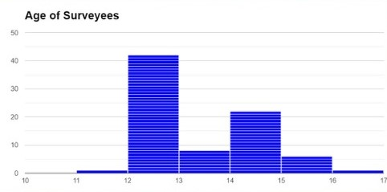
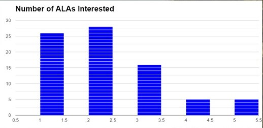

QUANTITATIVE DATA
Histogram for Age

- Skewed to the right
- Majority of data concentrated on left side
- Most common age among respondents was 12 years old
- Least common age among respondents are 11 and 16
Histogram for number of ALA's

- Skewed to the right
- Majority of data concentrated on left side
- Most common number of interested ALAs is 2
- Least common number of interested ALAs is 4
Frequency Distribution Table
| Age |
| Class intervals |
Class boundaries |
Frequency |
| 11 |
10.5-11.5 |
1 |
| 12 |
11.5-12.5 |
42 |
| 13 |
12.5-13.5 |
8 |
| 14 |
13.5-14.5 |
22 |
| 15 |
14.5-15.5 |
6 |
| 16 |
15.5-16.5 |
1 |
| 17 |
16.5-17.5 |
0 |
| 18 |
17.5-18.5 |
0 |
|
No.of ALAs
|
| 1 |
0.5-1.5 |
26 |
| 2 |
1.5-2.5 |
28 |
| 3 |
2.5-3.5 |
16 |
| 4 |
3.5-4.5 |
5 |
| 5 |
4.5-5.5 |
5 |